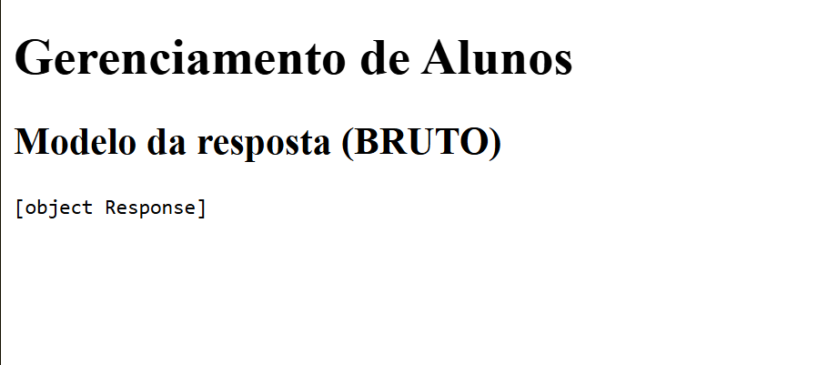
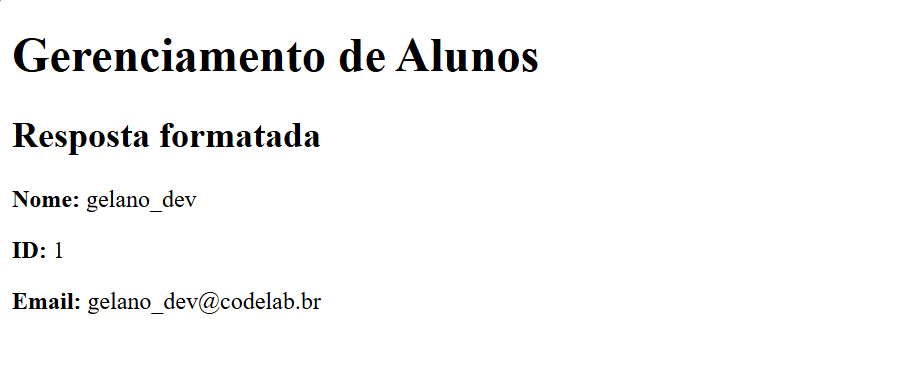

Aula 7: SQLModel e Integração com FastAPI
Conteúdos
Páginas no FastAPI e CORS
Exercícios
Introdução
Na aula passada, vimos mais sobre SQLite e sobre como podemos manipular nossos dados em um Banco de Dados Relacional.
Na aula anterior a essa, tivemos uma introdução ao FastAPI com alguns exemplos de como poderíamos receber requisições e, então, tomar ações a partir delas.
Finalmente, na aula de hoje, iremos juntar tudo o que aprendemos para construir uma API
conectada a um banco de dados próprio. A API deverá receber diversas requisições e, então,
tomar ações que podem envolver a criação, atualização, ou obtenção de dados de nosso banco.
Para facilitar nosso trabalho, existem diversas outras ferramentas e bibliotecas
que simplificam a manipulação do banco de dados, e aproximam da nossa visão
orientada a objetos que já estamos acostumados, uma delas, que veremos nesta aula é o SQLModel
SQLModel
SQLModel é uma biblioteca utilizada para interagir com Bases de Dados SQL
a partir de código em Python.
Na prática, o SQLModel cria uma abstração sobre o SQL que nos permite trabalhar com bancos de dados usando classes e objetos Python
em vez de consultas SQL diretas, possivelmente simplificando a construção e manutenção de nossa API.

Definição
“Uma abstração é um conceito geral ou uma ideia ao invés de algo concreto e tangível.
Em computação, é uma versão simplificada de algo técnico, objetivando reduzir a complexidade
através da remoção de informações desnecessárias.”
Fonte: TechTerms.com, “Abstraction — Definition”.
Como usar o SQLModel?
Vamos recapitular o que vimos da aula passada sobre SQL.
O passo a passo para podermos manipular dados em um banco de dados é:
- Criar a tabela que representará os dados (o que costuma envolver):
- Definir os tipos de cada coluna
- Configurar propriedades das colunas (exemplo UNIQUE ou AUTOINCREMENT)
- Estabelecer, caso necessário, relação entre seus dados e outras tabelas.
- Povoar a tabela com os dados (o que costuma envolver):
- Fornecer as informações obrigatórias pedidas pela tabela
- Salvar no banco de dados
- Finalmente, fazer as consultas, atualizações e demais operações
Veremos em detalhes, como executar cada um destes passos a seguir.
Criando uma tabela com SQLModel
Desta parte em diante, como exemplo, continuaremos a trabalhar em
nossa API de cursos, mais especificamente, para entender melhor a
parte de relacionamentos entre tabelas, iremos por agora, definir
modelos que relacionem estudantes, aos cursos que eles estão matriculados.
As informações básicas que um curso possui são:
- Nome do Curso
- Código do Curso
- Descrição do conteúdo
E, as informações básicas que um aluno deve possuir são:
- Nome do Aluno
- Email
Por simplicidade, não iremos abordar detalhes dos docentes.
Com os requisitos em mente, podemos finalmente modelar nossa tabela usando SQLModel.

Verificação Rápida
Anteriormente, definimos quais seriam as propriedades do aluno e do curso.
Sabemos ainda que os alunos devem cursar um curso, ou seja, estabelecemos
também, uma relação entre ambos os elementos.
A pergunta que fica é:
Como poderíamos modelar a relação entre eles?
Alunos guardam informações sobre os cursos em que eles estão matriculados? Ou os cursos serão os responsáveis por guardar estas informações?
Sugestão: nem um, nem outro, podemos criar um outro objeto para abstrair a relação!
Similar ao que fizemos em MAC0444 (Baseados), com as relações entre indivíduos.
Para reforçar, lembre-se de que o SQLModel cria uma abstração
sobre as informações em nosso Banco de Dados através de Classes e Objetos.
Sabendo disso, podemos simplesmente criar 3 classes, uma para a Tabela de Alunos,
outra para a Tabela de Cursos, e uma última tabela que estabeleça a relação entre ambos.
Exemplo de Implementação
from typing import List, Optional
from sqlmodel import Field, Relationship, SQLModel
class Matricula(SQLModel, table=True):
aluno_id: Optional[int] = Field(
default=None,
foreign_key="aluno.id",
primary_key=True,
)
curso_id: Optional[int] = Field(
default=None,
foreign_key="curso.id",
primary_key=True,
)
class Aluno(SQLModel, table=True):
id: Optional[int] = Field(default=None, primary_key=True)
nome: str
email: str = Field(index=True, unique=True)
cursos: List["Curso"] = Relationship(
back_populates="alunos",
link_model=Matricula,
)
class Curso(SQLModel, table=True):
id: Optional[int] = Field(default=None, primary_key=True)
nome: str
codigo: str = Field(index=True, unique=True)
descricao: Optional[str] = None
alunos: List["Aluno"] = Relationship(
back_populates="cursos",
link_model=Matricula,
)
Detalhes de implementação
É muita informação de uma vez só para quem está vendo isso num primeiro momento, então vamos por partes:
Optional:
É um indicador de tipo que informa tanto para o programador, quanto para eventuais
outros verificadores de tipo, que aquele parâmetro pode ser tanto de um tipo específico,
neste caso, um inteiro (int), quanto pode ser None, no caso do Python.
Ele é frequentemente usado em campos como IDs, pois ao criar um objeto,
o valor ainda não existe e será definido automaticamente pelo banco de dados.
Field: Corresponde a um campo da nossa tabela,
é lá que especificamos informações úteis em nosso modelo como,
se é algum tipo de chave, se é único, etc...
Relationship: Como o próprio nome sugere,
é o que define a relação entre duas tabelas
(Essa parte é importante e veremos com mais detalhes em breve)
primary_key e foreign_key:
Configuram o conceito que vimos na última aula, se é um identificador próprio
ou um apontador para outro dado de outra tabela respectivamente.
index: Cria um índice no banco para acelerar consultas, especialmente com
WHERE e ORDER BY. Dependendo do caso, índices também ajudam
em JOIN, quando a junção envolve colunas indexadas.
- Mas e o
AUTOINCREMENT?
Em SQLite, uma chave primária inteira normalmente recebe um valor automaticamente
quando você insere uma linha sem informar o id (mecanismo de rowid).
Na prática: deixe id=None no modelo e o valor aparecerá após o commit()
(e você pode usar refresh() para recarregar o objeto).
E o último ponto que vale mencionar agora é que, você deve ter observado que na definição de todos os
modelos, herdamos o SQLModel e definimos table=True,
sobre estes detalhes, iremos também por partes.
SQLModel: é a classe-base de qualquer modelo de manipulação de dados usando SQLModel.
Ao herdar dela, seu modelo passa a ter uma estrutura de dados bem definida e
pode ser usada para manipular o banco.
table=True: indica que aquela classe deve ser tratada como uma tabela real no banco.
Sem esse parâmetro, a classe pode ser usada apenas como esquema de dados (por exemplo, entrada/saída
da API), mas não será criada como tabela pelo SQLModel.metadata.create_all(...) que veremos mais adiante.
E com isso, seus modelos estão configurados e prontos para uso : )
Inicializando o banco de dados
Assim como fizemos no item anterior, vamos novamente pensar num passo a passo de como faríamos a inicialização sem considerar nenhuma biblioteca.
- Como o SQLite usa um arquivo para armazenar o banco, parece razoável que teremos que carregá-lo logo no começo.
- Com o arquivo carregado, de alguma forma, caso o modelo não faça isso automaticamente, deveríamos garantir que as mesmas informações representadas no modelo, de fato existam no banco de dados.
Utilizando o SQLModel, este procedimento corresponde aos passos de:
- Criar a engine
- Criar as tabelas que, porventura, ainda não existam
Que podemos descrever através do código a seguir:
from sqlmodel import SQLModel, create_engine, Session
arquivo_sqlite = "aula7.db"
url_sqlite = f"sqlite:///{arquivo_sqlite}"
engine = create_engine(url_sqlite)
def create_db_and_tables():
SQLModel.metadata.create_all(engine)

Boa Prática
Um padrão comum é deixar a criação da engine e a dependência de sessão em um arquivo como database.py.
Além disso, em especial para projetos maiores, costumeiramente temos uma pasta dedicada aos modelos de dados,
com arquivos exclusivos e dedicados a cada modelo.
Por simplicidade, estas linhas serão incluídas diretamente no main.py
Novamente, detalhando cada um dos comandos utilizados aqui, temos:
create_engine: Cria o motor, ou o mecanismo, responsável por gerenciar as conexões e acessos ao banco de dados;SQLModel.metadata.create_all: Verifica todos os modelos criados e cria as tabelas correspondentes aos modelos que ainda não existem no banco.Session: Ainda não é utilizado por agora, mas será a interface que usaremos para nos comunicar com o banco de dados através do SQLModel
E com isso, finalmente fechamos a parte do SQLModel, para terminarmos a construção do nosso sistema de gerenciamento de cursos,
precisamos apenas configurar o FastAPI e definir rotas que manipulem o banco conforme forem necessárias.
Mas antes disso, ainda no assunto da modelagem, lembramos que a relação estabelecida neste exemplo é a Relação Muitos para Muitos (N:M).
E existem algumas outras relações e padrões para implementação destas relações, veremos brevemente cada uma delas.
Relações entre dados
Vimos na última aula, que uma das principais vantagens dos bancos de dados Relacionais,
é que podemos criar referências entre uma linha de uma tabela, com outra linha de outra tabela,
nos permitindo economizar espaço e simplificar informações repetidas em uma tabela.
Ao todo, temos três tipos de relações principais:
- Um para um (1:1);
- Um para muitos (1:N);
- Muitos para muitos (N:M)
Em termos de modelagem, a diferença entre essas relações está em como a chave estrangeira é organizada
e em quantas ocorrências de um lado podem se ligar ao outro.
A seguir, explicaremos cada uma destas relações em detalhes.
Relação Um para Um (1:1)
Na relação 1:1, cada registro da tabela A se relaciona com no máximo um registro da tabela B,
e vice-versa. Um exemplo disso, pode ser a relação entre uma pessoa e seus documentos de identificação
como a relação entre Pessoa e RG:
from typing import Optional
from sqlmodel import Field, Relationship, SQLModel
class Pessoa(SQLModel, table=True):
id: Optional[int] = Field(default=None, primary_key=True)
nome: str
documento: Optional["RG"] = Relationship(back_populates="pessoa")
class RG(SQLModel, table=True):
id: Optional[int] = Field(default=None, primary_key=True)
rg: str = Field(unique=True)
pessoa_id: int = Field(foreign_key="pessoa.id", unique=True)
pessoa: Optional["Pessoa"] = Relationship(back_populates="documento")
Repare no unique=True em pessoa_id na tabela de RG
ele garante que cada pessoa não possa aparecer em mais de uma entrada da tabela de RGs.
Relação Um para Muitos (1:N)
Na Relação Um para Muitos (1:N), um registro da tabela principal se relaciona com vários registros da tabela dependente.
Um exemplo disso é a relação entre Estado e Cidade: um mesmo estado
pode possuir diversas cidades, mas cada cidade pertence a, no máximo, um único estado.
from typing import List, Optional
from sqlmodel import Field, Relationship, SQLModel
class Estado(SQLModel, table=True):
id: Optional[int] = Field(default=None, primary_key=True)
nome: str
sigla: str
cidades: List["Cidade"] = Relationship(back_populates="estado")
class Cidade(SQLModel, table=True):
id: Optional[int] = Field(default=None, primary_key=True)
nome: str
estado_id: int = Field(foreign_key="estado.id")
estado: Optional["Estado"] = Relationship(back_populates="cidades")
Nesse caso, a chave estrangeira fica na tabela do lado "muitos" (Cidade),
apontando para o lado "um" (Estado).
Relação Muitos para Muitos (N:M)
Na Relação Muitos para Muitos (N:M), vários registros de uma tabela podem se ligar a vários da outra.
Exemplo: um Aluno pode cursar várias Disciplinas,
e uma disciplina pode ter vários alunos.
Em SQLModel, representamos isso com uma tabela associativa
(também chamada de tabela de ligação, em SQLModel, é o link_model), contendo as chaves estrangeiras dos dois lados.
from typing import List, Optional
from sqlmodel import Field, Relationship, SQLModel
class Matricula(SQLModel, table=True):
aluno_id: Optional[int] = Field(
default=None,
foreign_key="aluno.id",
primary_key=True,
)
disciplina_id: Optional[int] = Field(
default=None,
foreign_key="disciplina.id",
primary_key=True,
)
class Aluno(SQLModel, table=True):
id: Optional[int] = Field(default=None, primary_key=True)
nome: str
disciplinas: List["Disciplina"] = Relationship(
back_populates="alunos",
link_model=Matricula,
)
class Disciplina(SQLModel, table=True):
id: Optional[int] = Field(default=None, primary_key=True)
nome: str
alunos: List["Aluno"] = Relationship(
back_populates="disciplinas",
link_model=Matricula,
)
Esse padrão é o mais flexível quando precisamos registrar vínculos entre entidades
que se repetem dos dois lados.
Boa Prática
No SQLModel, os relacionamentos funcionam da seguinte forma:
Um para Um (1:1) utiliza uma chave estrangeira com unique=True;
Um para Muitos (1:N) define a chave estrangeira no lado que possui vários registros;
E Muitos para Muitos (N:M) requer o uso de link_model por meio de uma tabela associativa.
E com isso, cobrimos todo o conhecimento necessário de SQLModel para começar a criar nossas APIs
utilizando o SQLModel como abstração para simplificar nosso projeto.
Integrando FastAPI + SQLModel + SQLite
Para utilizar o SQLModel em seu projeto, é preciso instalar a blilioteca com:
pip install sqlmodel
Neste instante, já temos os modelos definidos e o código de inicialização
da nossa biblioteca de abstração de acesso ao banco de dados.
Para finalizar o sistema, basta preparar a API que nos permitirá acessar
e obter informações do banco de dados de estudantes.
Inicializando a API
Além dos procedimentos de praxe para inicializar o FastAPI e definir as rotas,
precisamos garantir que a inicialização da API venha acompanhada da inicialização do SQLModel.
Para isso, podemos definir um evento de inicialização no FastAPI com
@app.on_event("startup") e, nele, executar a padronização dos modelos
com o banco de dados através da função create_db_and_tables().
Com isso, nosso código inicial da API com integração com o banco de dados ficaria da seguinte forma:
from fastapi import FastAPI
from database import create_db_and_tables
app = FastAPI()
@app.on_event("startup")
def on_startup() -> None:
create_db_and_tables()

Observação
Em versões recentes do FastAPI, @app.on_event("startup") pode ser considerado “legado”
em favor do padrão lifespan. Para fins didáticos, o exemplo continua válido e funciona,
mas vale a pena conhecer o lifespan quando estiver montando projetos maiores.
O equivalente a esta versão com lifespan está dado abaixo:
from contextlib import asynccontextmanager
@asynccontextmanager
async def initFunction(app: FastAPI):
# Executado antes da inicialização da API
create_db_and_tables()
yield
# Executado ao encerrar a API
app = FastAPI(lifespan=initFunction)
E, daqui em diante, resta apenas configurar as requisições para realizar as operações do sistema,
envolvam elas o banco de dados ou não.
Criando requisições que envolvam o banco de dados
Esta é a parte mais importante e o objetivo principal das últimas duas aulas. Também é a parte mais simples do processo, especialmente porque já vimos como o FastAPI funciona na semana passada.
Como exemplo, faremos com que nossa API aceite requisições para:
- criar alunos e cursos;
- matricular alunos em cursos;
- obter listas de alunos por curso;
- consultar informações de cursos e alunos;
- desfazer matrículas;
- atualizar descrições de cursos.
Adicionando dados através da API
Para estas requisições, precisamos apenas ter uma instância que siga o modelo definido anteriormente
e, então, realizar operações de adição, registro e, eventualmente, atualização.
Para exemplificar essas operações, temos o código abaixo:
@app.post("/alunos")
def criar_aluno(aluno: Aluno):
with Session(engine) as session:
session.add(aluno)
session.commit()
session.refresh(aluno)
return aluno
@app.post("/cursos")
def criar_curso(curso: Curso):
with Session(engine) as session:
session.add(curso)
session.commit()
session.refresh(curso)
return curso
@app.post("/matriculas")
def matricular(aluno_id: int, curso_id: int):
with Session(engine) as session:
matricula = Matricula(
aluno_id=aluno_id,
curso_id=curso_id
)
session.add(matricula)
session.commit()
return matricula
Observe que esta seção de código passa a fazer uso dos modelos descritos
na seção de criação de tabelas com SQLModel.
Com isso, precisamos importar esses modelos para poder modificá-los através da nossa API.
Ou seja, precisamos adicionar aos nossos imports:
from models import Aluno, Curso, Matricula
Reforçando que, para propósitos deste exemplo, nossos 3 modelos estão em um arquivo chamado models.py
Entrando em detalhes com respeito aos comandos novos utilizados, temos:
session.add: Permite que preparemos um objeto para ser sincronizado com o banco de dadossession.refresh(objeto): Recarrega um objeto a partir do banco de dados com as informações que estão lá na hora.session.get(Tabela, primary_key): Retorna uma informação de uma Tabela do banco de dados, dada sua chave primáriasession.commit(): Registra todas as alterações feitas no banco de dados.
Você poderá testar o funcionamento do código e da API,
acessando a página criada pelo FastAPI
e, após criar alguns alunos e cursos por lá, poderá ver se as mudanças estão sendo refletidas no arquivo .db
Boa Prática
Durante os seus testes, especialmente os relacionados a matrícula, você deve ter reparado que é possível matricular
alunos em cursos que não existem, para resolver este problema, é uma boa prática fazer a validação das suas operações
antes de registrá-las e caso alguma coisa dê errado, retornar ao usuário uma mensagem de erro indicando o que aconteceu.
Neste exemplo, poderíamos, antes de fazer o commit da matrícula, adicionar as linhas:
aluno = session.get(Aluno, aluno_id)
curso = session.get(Curso, curso_id)
if not aluno or not curso:
raise HTTPException(404, "Aluno ou curso não encontrado")
Caso tenha tido curiosidade, o erro 404 é “Not Found” (não encontrado). Em alguns casos,
você também pode preferir retornar 400 quando a requisição está mal formatada, ou os parâmetros são inválidos.
Obtendo dados através da API
Agora que temos como inserir informações, podemos ir para uma das operações mais simples
relacionadas ao banco de dados: a extração de informações.
Para isso, é importante saber quais informações existem, para então podermos buscá-las.
Como exemplo, iremos implementar requisições para obter informações de cursos específicos, informações de alunos específicos e, por último, obter a lista de alunos de algum curso. Segue o código de exemplo:
@app.get("/cursos/{codigo}")
def buscar_curso(codigo: str):
with Session(engine) as session:
query = select(Curso).where(Curso.codigo == codigo)
return session.exec(query).first()
@app.get("/alunos")
def buscar_alunos_por_nome(nome: Optional[str]):
with Session(engine) as session:
if nome:
query = select(Aluno).where(Aluno.nome.contains(nome))
return session.exec(query).all()
query = select(Aluno)
return session.exec(query).all()
@app.get("/cursos/{codigo}/alunos")
def alunos_do_curso(codigo: str):
with Session(engine) as session:
query = (
select(Aluno)
.join(Matricula, Matricula.aluno_id == Aluno.id)
.join(Curso, Matricula.curso_id == Curso.id)
.where(Curso.codigo == codigo)
)
return session.exec(query).all()
Veja que agora, estamos fazendo uso do select, logo, precisamos também importar esta função,
com isso, nossa linha de imports do SQLModel estará da seguinte forma:
from sqlmodel import SQLModel, create_engine, Session, select
Além da função select, estamos também fazendo uso de outros métodos cujo nome e funcionalidade
são parecidos com o SQL “puro”. Para revisão, vamos detalhar o que cada um faz:
select: define “o que” estamos buscando (qual modelo/tabela, quais colunas etc.)exec: executa a query no banco e retorna um resultado que pode ser consumido com first() ou all()first e all: retornam, respectivamente, o primeiro resultado (ou None) e a lista de todos os resultadosjoin: Assim como vimos na aula anterior, é o que nos possibilita juntar informações de várias tabelas diferentes através das relações entre elaswhere: coloca condições sobre as informações que estamos buscando
Cuidado!
Apesar de parecer contraintuitivo, não podemos retornar apenas o resultado da query com o exec
sem alguma das funções de seleção, independentemente da quantidade de resultados.
Como já reforçado, exec retorna um resultado/objeto de iteração.
Sem selecionar o dado final, a resposta da API poderia ficar parecida com o formato abaixo:
{
"_row_getter": null,
"_memoized_keys": [
"_row_getter",
"_iterator_getter"
],
"_iterator_getter": {}
}
E com isso, cobrimos toda a parte fundamental da busca por informações no banco de dados utilizando nossa API : D
Atualizando dados através da API
Prosseguindo com as necessidades de nossa API de cursos, o próximo passo é permitir
a atualização da descrição do curso, seja por mudanças na ementa, no cronograma
ou por qualquer outra razão.
Assim como nos outros casos, a busca pelo curso será feita através do seu próprio código.
Então, de forma similar à requisição que busca as informações, iremos primeiro fazer a query para retornar o objeto do curso,
e então, alteraremos este objeto e enviaremos a atualização ao banco.
A seguir, o código que realiza estas ações:
@app.patch("/cursos/{codigo}")
def atualizar_descricao(codigo: str, descricao: str):
with Session(engine) as session:
query = select(Curso).where(Curso.codigo == codigo)
curso = session.exec(query).first()
if not curso:
raise HTTPException(404, "Curso não encontrado")
curso.descricao = descricao
session.add(curso)
session.commit()
session.refresh(curso)
return curso
Perceba que também utilizamos o add nesta requisição mesmo sem adicionar novas entradas ao banco,
isto porque, assim como mencionado antes, a função add é responsável apenas por marcar objetos para serem
sincronizados com o banco, o que pode incluir tanto a adição de dados, quanto atualização dos mesmos.
Como incluímos HTTPException no exemplo acima, lembre-se de importar também:
from fastapi import HTTPException
Apagando dados através da API
Para finalizar nossa API, a única requisição que devemos preparar é aquela que irá desfazer
a matrícula de alunos em cursos específicos.
Lembre-se: estamos utilizando uma tabela auxiliar para estabelecer a relação de matrícula entre alunos e cursos.
Consequentemente, ao apagarmos o dado que estabelece essa relação, o próprio sistema do SQLModel
se encarregará de atualizar as demais informações tanto para o aluno quanto para o curso.
Por simplicidade de uso, assim como viemos fazendo ao longo das últimas requisições,
iremos permitir que o usuário de nossa API busque um aluno através do seu nome e o curso através do seu código.
O código para esta operação se encontra a seguir:
@app.delete("/matriculas")
def desfazer_matricula(nome_do_aluno: str, codigo_do_curso: str):
with Session(engine) as session:
curso = session.exec(select(Curso).where(Curso.codigo == codigo_do_curso)).first()
aluno = session.exec(select(Aluno).where(Aluno.nome == nome_do_aluno)).first()
if not curso or not aluno:
raise HTTPException(404, "Aluno ou curso não encontrado")
query = select(Matricula).where(Matricula.aluno_id == aluno.id,
Matricula.curso_id == curso.id)
matricula = session.exec(query).first()
if not matricula:
raise HTTPException(404, "Matrícula não encontrada")
session.delete(matricula)
session.commit()
return {"ok": True}
Boa Prática
Para evitar que, após uma operação, tenhamos que verificar manualmente se ela foi realmente executada,
é comum estabelecer em nossas APIs métodos padronizados de feedback, seja ele positivo ou negativo,
como mencionamos no tratamento de erros.
Neste exemplo, o return {"ok": True} corresponde à mensagem enviada ao usuário de que a exclusão foi feita com sucesso.
Usando APIs em páginas WEB
Até aqui, testamos nossa API principalmente pelo /docs do FastAPI.
Agora, vamos fazer uma página web simples consumir essa API usando JavaScript.
Para fazermos isso, nossa principal ferramenta será o método fetch embutido no JavaScript,
este método recebe como parâmetros uma URL/Rota que nossa API entenda, e opcionalmente, dependendo
de qual operação desejamos fazer em nossa API, uma série de outros parâmetros para especificar o método,
o tipo de conteúdo que será enviado ou recebido, além é claro, do próprio conteúdo da requisição caso ele exista.
Por exemplo, para pedir a lista de alunos matriculados cadastrados através de nossa API,
poderíamos simplesmente usar o seguinte comando JavaScript:
await fetch("/alunos")
Caso precise lembrar, estamos utilizando da definição de nossa API mostrada abaixo:
@app.get("/alunos")
def buscar_alunos_por_nome(nome: Optional[str]):
with Session(engine) as session:
if nome:
query = select(Aluno).where(Aluno.nome.contains(nome))
return session.exec(query).all()
query = select(Aluno)
return session.exec(query).all()
Esta rota foi configurada quando explicamos GET anteriormente.
Da forma como está, ao executarmos o fetch passando apenas a URL,
por padrão o comando executa o método GET com o corpo vazio, consequentemente,
nome = null e a API nos retornará uma lista de todos os alunos cadastrados.
Ou seja, precisamos aprimorar ainda mais o uso deste comando para então podermos usar na página.
Fetch em detalhes
O fetch recebe dois argumentos principais: a URL da rota e um objeto de
configuração (opcional) com os parâmetros da requisição.
method: define o método HTTP (GET, POST, PATCH, DELETE).headers: informa metadados da requisição (por exemplo, Content-Type: application/json).body: conteúdo enviado para a API, normalmente em JSON (não pode ser usado com GET).
Exemplos com o POST
Na prática, todos estes parâmetros podem ser usados, por exemplo, para fazer um POST em nossa API, como no exemplo abaixo:
await fetch("/alunos", {
method: "POST",
headers: { "Content-Type": "application/json" },
body: JSON.stringify({ nome: "gelano_dev", email: "gelano@codelab.br" })
});
Vale ressaltar que existem vários metadados possíveis de serem enviados através dos headers,
como por exemplo, podemos enviar metadados de autenticação, identificação de origem, especificação de formato, etc...
Caso queira ver mais detalhes sobre headers, consulte a documentação oficial disponível em https://developer.mozilla.org.
Entretanto, estes exemplos já cobrem o básico que utilizaremos em nossa API.
Caso suba a API, acesse sua página de documentação e copie e cole este código, você irá acrescentar um novo aluno à base de dados.
Mais exemplos com o GET
Na seção anterior, utilizamos a requisição para buscar por nome de aluno, mas não passamos
nome algum. Isso porque sabíamos que nossa API retornaria todos os nomes nessa situação. Mas, suponha agora
que queiramos buscar especificamente por gelano_dev: como faríamos isso, se não podemos passar dados pelo body?
Para operações GET, usualmente, passamos nossos parâmetros através da própria URL.
Por exemplo, se sabemos que o parâmetro solicitado pela API é o nome,
basta montar a rota da requisição GET no formato:
await fetch("/alunos?nome=gelano_dev")
E, com isso, especificamos que o parâmetro nome da função chamada pela API é gelano_dev.
Um outro exemplo disso, seria se fossemos buscar pelo código de um curso em específico,
caso precise lembrar, abaixo colocamos a definição da chamada de API para buscar o código de um curso.
@app.get("/cursos/{codigo}")
def buscar_curso(codigo: str):
with Session(engine) as session:
query = select(Curso).where(Curso.codigo == codigo)
return session.exec(query).first()
Observe que, nesse caso, especificamos na própria rota onde a variável codigo é inserida.
Isso muda ligeiramente a forma de montar o comando fetch.
No exemplo anterior, passamos o parâmetro pela estrutura ?nome=...,
aqui passaremos o valor diretamente no caminho da rota, como se estivéssemos acessando uma página web.
await fetch("/cursos/mac0350")
Conceito Rápido
Quando nossa rota é do tipo @app.get("/alunos"), estamos usando o chamado Query Parameter,
que é quando passamos os parâmetros através do formato ?variavel=....
Quando nossa rota é do tipo @app.get("/cursos/{codigo}"), estamos usando o chamado Path Parameter,
em que o parâmetro é passado como se fosse o endereço de uma página web.
Reflexão: Quando usamos um, e quando usamos outro?
Cuidado!
Quando, na API, definimos um parâmetro na rota como Path Parameter,
não podemos tentar passar esse mesmo dado no formato de Query Parameter, e vice-versa.
Pense bem na arquitetura de sua API antes de definir as rotas.
Exemplos com o DELETE
Outro dos comandos comuns que segue esta mesma linha é o DELETE, sua utilização segue uma lógica similar
a uma mistura dos outros dois comandos anteriores, em que primeiro acessamos sua rota,
em seguida, passamos os parâmetros conforme a metodologia que definimos seja ela Query Parameter ou Path Parameter (assim como o GET).
Por fim, especificamos o tipo de requisição (método) desejado, neste caso, DELETE (similar ao POST).
Como exemplo, também veremos os dois tipos de fetch que podemos fazer.
Para fins de exemplificação, colocaremos abaixo duas novas requisições que seguem padrões diferentes, mas que fazem a exata mesma coisa.
Ambas removem um aluno do banco de dados, a diferença é que uma remove pelo nome, e a outra, pelo seu ID.
@app.delete("/alunos")
def deletar_aluno_por_nome(nome: str):
with Session(engine) as session:
aluno = session.exec(select(Aluno).where(Aluno.nome == nome)).first()
if not aluno:
raise HTTPException(404, "Aluno não encontrado")
matriculas = session.exec(
select(Matricula).where(Matricula.aluno_id == aluno.id)
).all()
for matricula in matriculas:
session.delete(matricula)
session.delete(aluno)
session.commit()
return {"ok": True, "mensagem": "Aluno removido com sucesso"}
@app.delete("/alunos/{aluno_id}")
def deletar_aluno_por_id(aluno_id: int):
with Session(engine) as session:
aluno = session.get(Aluno, aluno_id)
if not aluno:
raise HTTPException(404, "Aluno não encontrado")
matriculas = session.exec(
select(Matricula).where(Matricula.aluno_id == aluno_id)
).all()
for matricula in matriculas:
session.delete(matricula)
session.delete(aluno)
session.commit()
return {"ok": True, "mensagem": "Aluno removido com sucesso"}
E neste caso, observe que na primeira: deletar_aluno_por_nome, estamos no caso em que configuramos puramente por
Query Parameters, portanto, nosso comando de fetch seguirá o seguinte padrão:
await fetch('/alunos?nome=gelano_dev', {
method: "DELETE"
})
A principal diferença em relação ao GET é que agora precisamos especificar
o método DELETE.
Analogamente, no segundo caso com Path Parameters,
a diferença em relação ao GET continua sendo a especificação do método DELETE.
await fetch('/alunos/1', {
method: "DELETE"
})
Exemplos com o PATCH
Por fim, seguindo uma lógica similar às anteriores, temos o PATCH.
A principal diferença dele para os demais, em especial para o POST,
é que normalmente não enviamos todos os parâmetros, já que nem sempre precisamos atualizar todos os campos de uma vez.
Em outras palavras: no PATCH, enviamos apenas o que realmente será alterado.
Se queremos mudar só o email, não precisamos reenviar nome, id e todos os outros campos.
Abaixo, um exemplo com Query Parameters, atualizando um aluno pelo nome exato:
@app.patch("/alunos")
def atualizar_aluno_por_nome_exato(
nome_exato: str,
nome_novo: Optional[str],
email_novo: Optional[str],
):
with Session(engine) as session:
aluno = session.exec(select(Aluno).where(Aluno.nome == nome_exato)).first()
if not aluno:
raise HTTPException(404, "Aluno não encontrado")
if nome_novo is not None:
aluno.nome = nome_novo
if email_novo is not None:
aluno.email = email_novo
session.add(aluno)
session.commit()
session.refresh(aluno)
return aluno
Nesse caso, a chamada com fetch fica assim:
await fetch('/alunos?nome_exato=gelano_dev&email_novo=gelano2@codelab.br', {
method: "PATCH"
})
Uma variação desse mesmo caso é enviar os campos de atualização no body
(em vez de passar tudo pela URL). A ideia é a mesma, apenas muda onde colocamos os dados.
await fetch('/alunos', {
method: "PATCH",
headers: { "Content-Type": "application/json" },
body: JSON.stringify({
nome_exato: "gelano_dev",
email_novo: "gelano2@codelab.br"
})
})
Já no caso de Path Parameter, podemos seguir exatamente o padrão da rota
já definida anteriormente na aula:
@app.patch("/cursos/{codigo}")
def atualizar_descricao(codigo: str, descricao: str):
with Session(engine) as session:
query = select(Curso).where(Curso.codigo == codigo)
curso = session.exec(query).first()
if not curso:
raise HTTPException(404, "Curso não encontrado")
curso.descricao = descricao
session.add(curso)
session.commit()
session.refresh(curso)
return curso
Nesse cenário, o fetch correspondente pode ser:
await fetch('/cursos/mac0350?descricao=Curso%20atualizado', {
method: "PATCH"
})
Como alternativa, também podemos manter o Path Parameter para identificar o curso
e enviar o novo valor no body da requisição:
await fetch('/cursos/mac0350', {
method: "PATCH",
headers: { "Content-Type": "application/json" },
body: JSON.stringify({ descricao: "Curso atualizado" })
})
Esse formato costuma ser útil quando a atualização começa a envolver mais de um campo,
pois evita URLs muito longas.
Repare que a estrutura da URL muda conforme a rota definida na API,
mas em todos os casos a ideia do PATCH continua a mesma:
atualizar apenas os campos necessários.
Note também que neste caso, usamos Path Parameters junto com Query Parameters,
e na prática, essa combinação é possível até mesmo em outros métodos, e apenas depende da arquitetura da sua API.
Usando a resposta da API na página
Até aqui, aprendemos a enviar requisições. O próximo passo é entender exatamente
o que o fetch retorna e como transformar isso em informação útil na interface.
Resultados do Fetch
Quando fazemos apenas:
const resposta = await fetch('/alunos?nome=gelano_dev');
o valor de resposta não é ainda o aluno em si, e sim um objeto do tipo
Response
(metadados da resposta HTTP), com informações como status, headers e corpo bruto.
Se tentarmos jogar esse objeto diretamente na tela, não teríamos a informação esperada.

Conversão da resposta da API
Para acessar os dados reais, precisamos ler o corpo da resposta e convertê-lo para JSON,
usando response.json():
const dados = await resposta.json();
O json() também é assíncrono, por isso usamos await de novo.
Em termos simples: o navegador ainda vai processar/ler o corpo da resposta,
então precisamos esperar esse passo terminar antes de acessar os campos.
Depois disso, dados passa a conter o conteúdo da API já convertido,
por exemplo uma lista de alunos.
Exibindo as informações na página
Agora, com os dados convertidos, o próximo passo é capturar cada informação e atribuí-la à posição correta na página.
const resposta = await fetch('/alunos?nome=gelano_dev');
const dados = await resposta.json();
const aluno = dados[0];
document.getElementById('nomeAluno').innerText = aluno.nome;
document.getElementById('idAluno').innerText = aluno.id;
document.getElementById('emailAluno').innerText = aluno.email;
Aplicando este código numa página com uma estrutura HTML conforme mostrada abaixo, teremos enfim uma visualização amigável dos dados para o usuário.
<p><strong>Nome:</strong> <span id="nomeAluno"></span></p>
<p><strong>ID:</strong> <span id="idAluno"></span></p>
<p><strong>Email:</strong> <span id="emailAluno"></span></p>

Páginas declaradas no FastAPI e CORS
Em projetos simples, é comum declarar no próprio FastAPI uma rota que devolve a página HTML,
por exemplo a rota /. Assim, backend e frontend rodam no mesmo servidor.
from fastapi.responses import FileResponse
@app.get("/")
def pagina_inicial():
return FileResponse("./sua_pagina.html")
Lembre-se, nesta estrutura, sua_pagina.html deverá estar no mesmo diretório em que a sua API foi invocada, e não necessariamente onde o código de sua API está.
Quando a página é servida pela mesma origem da API (mesmo protocolo, host e porta),
as chamadas com fetch("/rota") funcionam de forma direta.
Sobre CORS: ele é uma política de segurança do navegador para chamadas entre origens diferentes.
Em CORS, "origem" significa a combinação de protocolo + host + porta
(por exemplo, http://127.0.0.1:8000).
Então, se seu frontend estiver em http://127.0.0.1:5500 e sua API em
http://127.0.0.1:8000, já são origens diferentes por causa da porta.
Nessa situação, o navegador pode bloquear as requisições até que você configure CORS na API.
No FastAPI, isso é feito com o middleware CORSMiddleware, liberando apenas as origens necessárias.
Em desenvolvimento, às vezes usamos "*" para testes rápidos; em produção,
o ideal é restringir para os domínios reais da aplicação.
Isso é tudo para esta aula ;)
Exercícios